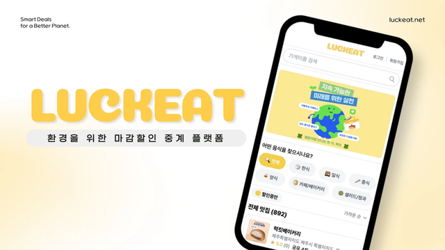
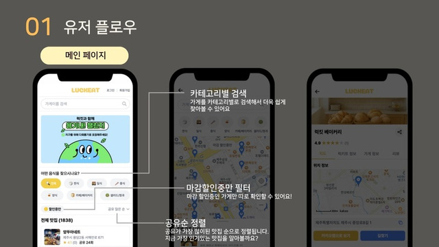
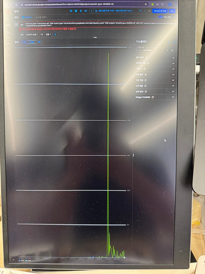
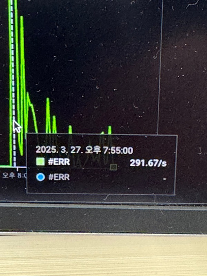
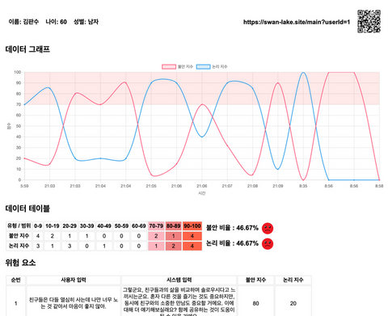

Summary of Qualifications
- 카카오 대표이사 최우수상 1위 수상을 통해 비즈니스 임팩트와 팀워크를 증명한 리더형 엔지니어
- 아키텍처 최적화 및 동적 크롤링 알고리즘 개발로 EC2 인프라 비용 83.5% 절감 경험
- AWS 기반 무중단 배포(Blue/Green) 파이프라인 설계 및 Observability 환경(Prometheus, Grafana) 구축 경험
- 생성형 AI(OpenAI API)를 활용한 서비스 개발 및 프롬프트 엔지니어링 경험
코드 리뷰로 다져진, 결과로 증명하는 엔지니어 권기현입니다. 👨💻
프랑스 대학(42 École)에서 315회의 코드 리뷰는 저에게 단순한 코드 검토가 아니었습니다. 동료와 함께 기술의 깊이를 더하고, 더 나은 해결책을 찾는 협업의 힘을 배우는 과정이었습니다. 이러한 협업의 힘으로 팀을 이끌어 카카오 대표이사 최우수상을 수상했고, 그렇게 다져진 기술적 깊이를 바탕으로 EC2 비용을 83.5% 절감하는 실질적인 성과를 만들었습니다.
Certification
✦ OPIc AL
✦ AWS Solution Architect Associate
✦ 정보처리기사
✦ SQLD
✦ 네트워크 관리사 2급
Skills
✦ Java, Spring Boot, Python, Node.js, Express.js, nginx, Linux
✦ AWS(EC2, RDS, ALB, S3, CloudFront, CloudWatch)
✦ MySQL, MariaDB, Redis
✦ JavaScript, TypeScript, React
✦ Prometheus, Grafana, Loki, Sentry
Awards
✦ 카카오 대표이사 최우수상(1위)
✦ 정보통신기획 평가원 원장상


개요 📃
음식물 쓰레기 절약과 소비자 할인 혜택을 동시에 제공하는 LuckEat 플랫폼의 백엔드 시스템을 설계하고 개발했습니다. 실제 시장에 방문하여 홍보를 하고 실제 고객의 피드백도 들어보면서 비즈니스 모델을 개선했습니다. 서비스 기간 동안 카카오, 구름 현직자 등 약 100명 이상의 유저가 실제로 사용한 서비스입니다.
팀구성
5인
프론트 1명
백엔드 3명
데브옵스 1명
역할 🙋
- 팀장
- 백엔드 개발, DevOps
- Google Place 스크래퍼와 AI 리뷰 요약 기능 개발
성과 🎉
- Google place api 스크래퍼 최적화로 ec2 비용 83.5% 절감
- 인메모리 기반 Key-Value형 DB 캐시 도입으로 핵심 쿼리 P95 시간 75.2% 단축
- 실제 시장 홍보 및 사용자 피드백 수집 → 비즈니스 모델 개선
- 카카오 대표이사 최우수상(1위)
- 디스콰이엇 주간 프로덕트 2위
Skills 🛠
4.API 호출 비용 300만원, 위기에서 배운 안정적인 시스템 설계
Place Photo API 요청은 일반적으로 1000회당 약 $7 정도의 요금이 부과됩니다.
따라서 30만 회(300,000회)의 요청 비용은 다음과 같이 계산할 수 있습니다.
• 300,000회 ÷ 1,000 = 300
• 300 × $7 = $2,100
예를 들어, 환율 1달러당 약 1,300원으로 계산하면
$2,100 × 1,300원 = 2,730,000원 정도의 비용이 발생합니다.
단, Google은 매월 $200의 무료 크레딧을 제공하므로 실제 청구 비용은 무료 크레딧 적용 후 달라질 수 있습니다.


문제상황
onError 이벤트 핸들러의 로직 오류로 10초 만에 30만 건의 API 호출이 발생하는 무한 루프가 발생했습니다. 이 버그는 300만 원의 잠재적 비용을 초래할 수 있는 심각한 장애였습니다.
해결 방안
단순한 예외 처리 미흡을 넘어, 외부 API에 대한 과도한 의존성이 근본 원인이라 판단했습니다.
- 1차 조치 (장애 차단): 먼저 onError 핸들러가 기본 이미지를 호출하도록 코드를 즉시 수정하여 추가적인 API 호출을 차단했습니다.
- 2차 조치 (아키텍처 개선): 근본적인 해결을 위해, 외부 이미지 URL을 직접 사용하는 대신 크롤링 시점에 이미지를 S3에 저장하고, 안정적인 내부 경로를 사용하도록 시스템 아키텍처를 변경했습니다. 이를 통해 외부 API 의존도를 낮춰 비용 통제권을 확보하고 서비스 안정성을 대폭 향상시켰습니다.
배운 점
이 경험은 단순한 버그 해결을 넘어, 더 안정적인 시스템을 만드는 개발자로 성장하는 계기가 되었습니다.
- 방어적 프로그래밍의 체화: 코드 한 줄이 서비스 전체 장애로 이어질 수 있음을 체감하며, 모든 예외 상황을 고려하는 습관을 갖게 되었습니다.
- 비용·안정성을 고려한 설계: 기능 구현을 넘어, 비용을 예측하고 외부 의존성을 최소화하는 아키텍처 설계의 중요성을 배웠습니다.
QR 코드 생성 및 URL 초대 기능
시니어가 어렵게 느낄 수 있는 로그인 대신
상담사가 URL/QR 코드를 전달함으로써 서비스 전달
데이터 제공 및 분석 기능
대화를 통해 데이터 수집 후 사용자 맞춤 자료 제공
수치화된 데이터로 사용자의 위험 수준 판단

개요 📃
고령자를 위한 AI 음성 상담 플랫폼을 개발하며, 심리 상태 분석 및 자동 위험군 감지 시스템을 구현했습니다. 상황에 맞는 모델 선택 전략으로 o3-mini와 gpt-4o-mini를 각각 점수 분석과 응답 생성에 활용해 Task-Specific Optimization을 달성했습니다. 또한 구조화된 프롬프트와 Few-shot 기법으로 안정적인 JSON 출력과 일관된 응답 품질을 확보했으며, Sliding Window Context 방식을 통해 토큰 제한 내에서 대화 흐름을 유지하는 기술을 적용했습니다.
팀구성
6인
프론트 1명
백엔드 4명
데브옵스 1명
역할 🙋
- 팀장 및 발표
- TTS 로직 개발 및 프롬프팅 최적화
성과 🎉
- 자연어 처리 파이프라인을 개선하여
응답 시간 32% 단축
Skills 🛠
- Backend: Java 17, Spring Boot 3.4.3, Spring WebFlux, Spring Data JPA
- Database: MySQL, JPA/Hibernate
- External API Integration: OpenAI API(STT, TTS, ChatGPT 통합), WebClient
- Frontend: Thymeleaf, JavaScript, HTML5/CSS3
- Development Tools: Gradle, Lombok, Spring Boot DevTools
- Testing: JUnit 5, Spring Boot Test
개요 📃
로컬 LLM 기반 실시간 회의 분석 풀스택 시스템입니다. Whisper STT와 3D-Speaker 화자 분리를 결합해 발화를 실시간 인식하고, 토픽 자동 감지·쟁점 구조화·자료 검색·개입 트리거(루프/합의/침묵/시간 초과)까지 단일 비동기 파이프라인으로 처리합니다. WebSocket 양방향 스트리밍으로 회의 진행 중 즉시 인사이트를 제공하며, 외부 API 의존 없이 로컬에서 모든 분석을 수행해 데이터 프라이버시를 보장합니다.
역할 🙋
- 풀스택 AI 개발
- STT·화자 분리·LLM 파이프라인 설계
- WebSocket 실시간 스트리밍 구현
- 프론트엔드 UI 설계
성과 🎉
- End-to-End 분석 지연 2초 이내 달성
- Whisper 반복 할루시네이션 다층 진단·해결
- 토큰 임계치 기반 LLM 호출로 비용·지연 최적화
Skills 🛠
- Backend: FastAPI, WebSocket, asyncio, Pydantic
- STT & Audio: mlx-whisper / faster-whisper (large-v3-turbo), Silero VAD, sounddevice
- Speaker Diarization: 3D-Speaker (ERes2Net), sherpa-onnx
- AI / LLM: Ollama, llama.cpp(bonsai), OpenAI SDK, tiktoken (cl100k_base)
- RAG & Search: ChromaDB 벡터 검색, Tavily 웹 검색
- Database: SQLite (aiosqlite)
Whisper 반복 할루시네이션 다층 진단 & 해결
문제 인식
동일 단어가 수십~수백 회 반복되는 STT decoding loop 발생
- 실측 사례: `welcome to the VIRT × 55회`, `vis × 200회` 등
- 정상 텍스트로 시작해 짧은 토큰이 뒤쪽에서 무한 반복
- 단순 후처리 필터로는 근본 원인 해결 불가
해결 방안 (4단계 진단)
- 1. condition_on_previous_text=False: 이전 세그먼트 prompt 재사용 차단 (mlx_whisper 기본 True가 loop 고착 유발)
- 2. 트레일링 묵음 trim: VAD가 포함시킨 800ms 묵음을 200ms로 축소
- 3. compression_ratio_threshold 2.4→2.0: 반복 감지 민감도 상향, 조기 fallback
- 4. 후처리 반복 필터: 4회 이상 연속 반복 시 반복 시작 지점 이전까지만 보존
성과
Whisper 반복 할루시네이션 실서비스 환경에서 제거
오픈소스 라이브러리의 default 동작과 실제 회의 음성 특성의 mismatch를 코드·문서 동시 분석으로 도출


 시간 단축
시간 단축